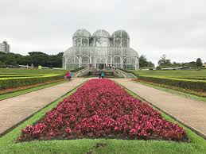

Região Sul

Composta pelos estados: Paraná, Santa Catarina e Rio Grande do Sul.

Principais pontos turísticos:
- Paraná: Curitiba, Ilha do Mel, Morretes, Foz do Iguaçu: A cidade que abriga as Cataratas do Iguaçu, um conjunto de 275 cachoeiras que formam uma das maiores quedas d'água do mundo, é um patrimônio mundial da UNESCO.
- Rio Grande do Sul: Gramado, Porto Alegre, Cânion Itaimbezinho, Catedral de Pedra.
- Santa Catarina: Florianópolis, Bombinhas, Blumenau, Serra do Rio do Rastro, Beto Carrero, Balneário Camboriú.
Monumentos famosos:
- Ponte Hercílio Luz - Florianópolis
Patrimônios culturais do Brasil
- Fortaleza de Santa Cruz de Anhatomirim - Santa Catarina
- Ruínas de São Miguel das Missões - Rio Grande do Sul

Melhor período para viajar
A melhor época para visitar o Sul é durante a primavera e verão, de setembro a março. O clima mais quente e úmido é ideal para visitar as praias da região, como Florianópolis e Balneário Camboriú. No inverno, as temperaturas podem ser muito baixas, tornando difícil aproveitar as praias e atividades ao ar livre.

Clima
Esta região tem um clima subtropical, com invernos frios e verões quentes e úmidos. As temperaturas médias anuais variam de 16°C a 20°C. A estação chuvosa é durante o verão e a estação seca no inverno.

Comidas típicas
A culinária do Sul é influenciada pela culinária europeia, com pratos à base de carne e de frutos do mar. Alguns pratos típicos incluem o churrasco gaúcho, o barreado, o arroz de carreteiro, a sopa de agnoline e o pierogi.